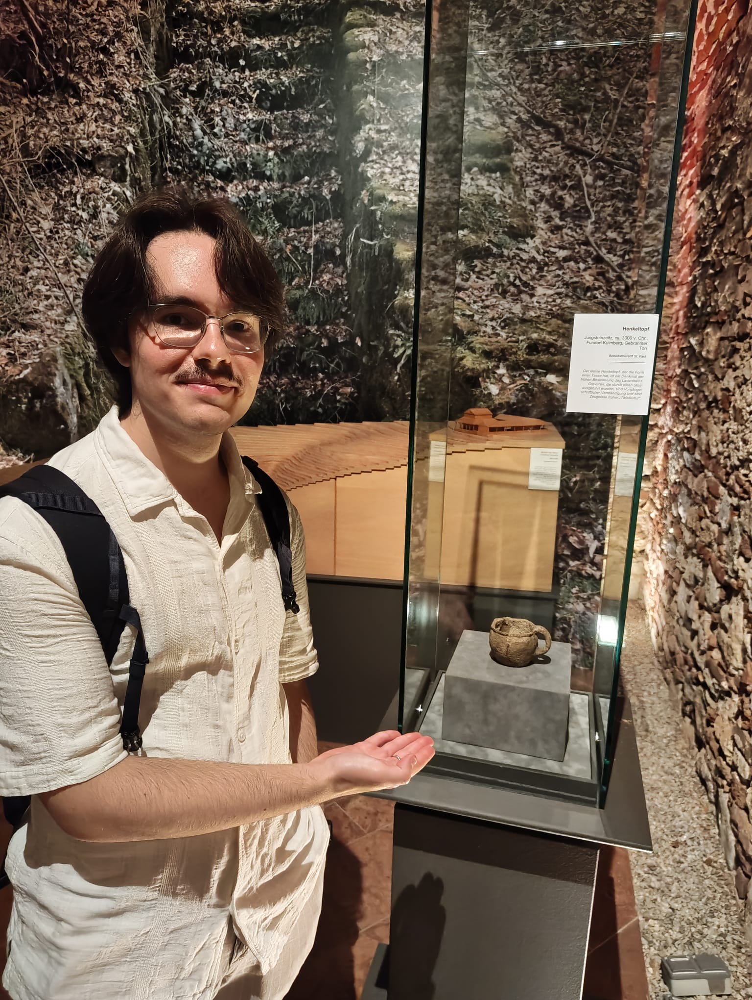

Buongiorno, sono Gianluca Zavan
And this is the laziest web page ever (with the flashiest font I found).
1. About

This is me showing you a cup from 3000 BC.
I’m a PhD student in Symbolic Artificial Intelligence at the University of Klagenfurt. I’m a former member of MadrHacks, the ethical hacking team of the University of Udine.
I graduated with honors at the University of Udine and the University of Klagenfurt. My thesis, titled “Automated planning for production routines”, was the result of a collaboration with Infineon AG.
My main interests are:
- Artificial Intelligence, both symbolic and sub-symbolic
- Software security
- Programming languages
- Beatboxing
- Videogames
- Tabletop games
- Reading all kinds of stuff
- Music with lots of synths and robot voices (Daft Punk I’m looking at you)
- Exiting (Neo)Vim, but Emacs is also my friend now
- Linux, I use Arch btw
You can find me on Github and Linkedin. You can send me an
email at zavan.gianluca[at]outlook.com.
2. Some projects of mine
- Advent of code 2024: my solutions in CL to some of the problems of AOC 2024
- The Maybe monad in Scheme
- An Object-Graph Mapper to work with Ontologies in Python
- Haskell implementation of Ant Colony Optimization
- Modelling of NP-hard problems in Answer Set Programming
3. Things worth a look in the web
- Common Lisp resources
- “The Most Beautiful Program Ever Written” by William Byrd
- To dive deeper, check miniKanren
- https://thesephist.com/: a nice blog
- Make a Lisp
- https://protohackers.com/problems: something I might do someday (probably not)
- The Dao of Functional Programming